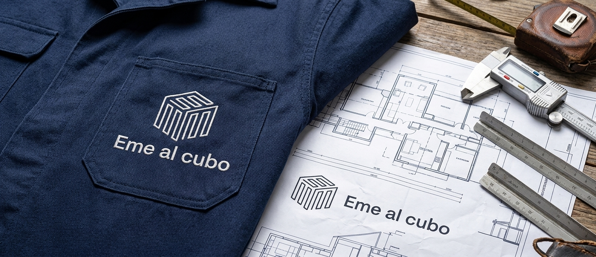
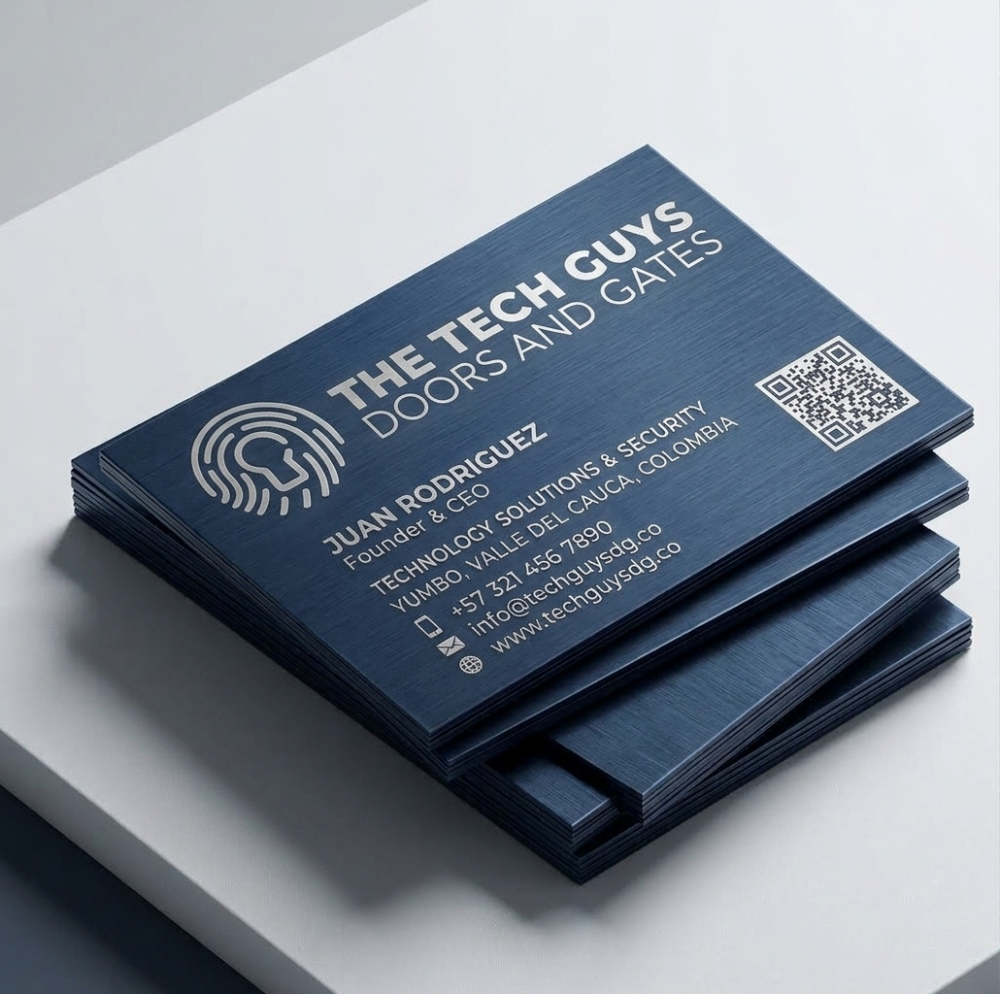
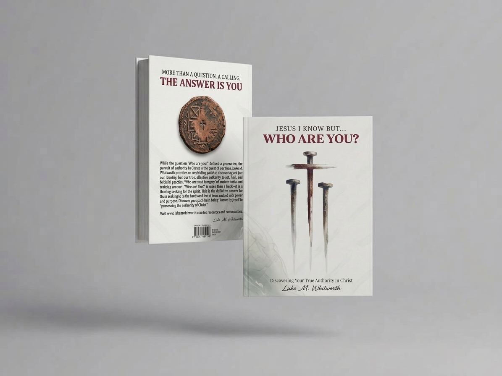
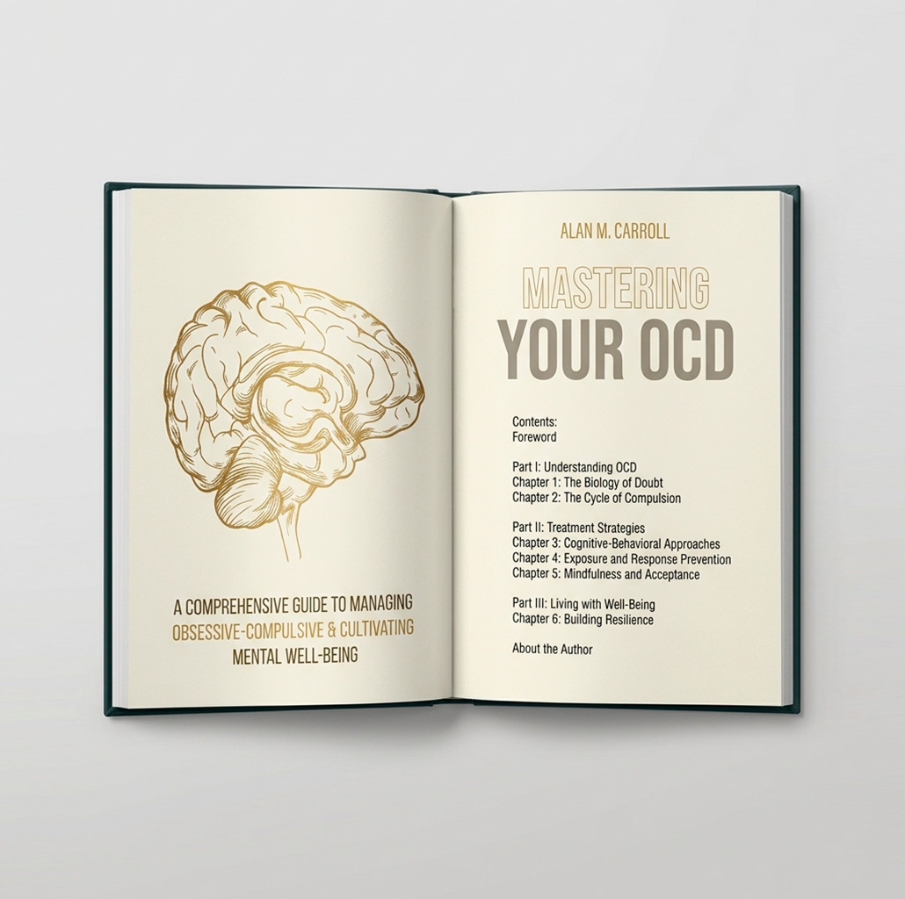

Where projects are born with life and identity.Aquí nacen proyectos con vida e identidad.
I build effective communication through graphic design and brand visual identity.Desarrollo comunicación efectiva a través del diseño de piezas gráficas y la creación de la identidad visual de una marca.
Johanna Borrero Pediatría y Neonatología
Branding
20262026
Visual identity for a pediatric practiceIdentidad visual para un consultorio pediátrico
Creation of the visual identity for Dra. Johanna Borrero's pediatric and
neonatal practice. I designed the isotype — a mother elephant and her calf, symbolizing
memory, protection and bond — along with the logotype, color palette, typography and
voice and tone. The full brand manual covers the logo's construction and clear space,
authorized versions, stationery, embroidery on coats, office signage, digital media and
patient materials, plus the incorrect uses to avoid.Creación de la identidad visual para el consultorio de pediatría y
neonatología de la Dra. Johanna Borrero. Diseñé el isotipo —una elefanta y su cría, que
simbolizan memoria, protección y vínculo— junto con el logotipo, la paleta de color, la
tipografía y el tono de voz de la marca. El manual completo define la construcción y el
área de respeto del logo, sus versiones autorizadas, la papelería, el bordado en batas,
la señalética del consultorio, los medios digitales y el material para pacientes, además
de los usos incorrectos que hay que evitar.

Eme al Cubo
Branding
20262026
Corporate identity for a construction companyIdentidad corporativa para una constructora
Creation of the corporate identity for Eme al Cubo, an architectural
development and civil works company. I designed the isotype — the letter M repeated
on the three visible faces of a cube, drawn with a single continuous stroke — along
with the logotype, color palette, typography and system of authorized versions. The
brand manual covers construction and clear space, incorrect uses, and its application
on business cards, brochures and the website.Creación de la identidad corporativa de Eme al Cubo, una empresa de
desarrollos arquitectónicos y obra civil. Diseñé el isotipo —la letra M repetida en
las tres caras visibles de un cubo, trazada con una sola línea continua— junto con el
logotipo, la paleta de color, la tipografía y el sistema de versiones autorizadas. El
manual de marca define la construcción y el área de respeto, los usos incorrectos, y
su aplicación en tarjetas de presentación, brochure y sitio web.
St Duke's Distillery
Branding
20262026
Corporate identity for a craft distilleryIdentidad corporativa para una destilería artesanal
Creation of the corporate identity for St Duke's Distillery, a craft
distillery built around the idea "from grass to glass". I designed the isotype —a
faceted ram, cut with the same angles as copper stills and cut glass— along with the
logotype, gold-on-black color system and typography. The brand manual covers the
approved lockups, clear space, misuse, and its application on bottle labels,
glassware, venue signage and business cards.Creación de la identidad corporativa de St Duke's Distillery, una
destilería artesanal construida sobre la idea "de la semilla al vaso". Diseñé el
isotipo —un carnero facetado, cortado con los mismos ángulos de los alambiques de
cobre y el vidrio tallado— junto con el logotipo, el sistema de color dorado sobre
negro y la tipografía. El manual de marca define los lockups autorizados, el área de
respeto, los usos incorrectos, y su aplicación en etiquetas de botella, cristalería,
señalética del local y tarjetas de presentación.

The Tech Guys
Branding
20262026
Corporate identity for a smart access companyIdentidad corporativa para una empresa de accesos inteligentes
Creation of the corporate identity for The Tech Guys, a company that
installs smart doors, gates and access control. I designed the isotype — a fingerprint
fused with a keyhole — along with the logotype, navy-and-blue color system and
typography. The brand manual covers the approved lockups, clear space, misuse, and its
application on the website, social banners, brochure and business cards.Creación de la identidad corporativa de The Tech Guys, una empresa que
instala puertas, portones y control de acceso inteligente. Diseñé el isotipo —una
huella digital fusionada con un ojo de cerradura— junto con el logotipo, el sistema de
color en azul marino y azul, y la tipografía. El manual de marca define los lockups
autorizados, el área de respeto, los usos incorrectos, y su aplicación en el sitio
web, banners de redes, brochure y tarjetas de presentación.

Jesus I Know But... Who Are You?
Editorial designDiseño editorial
20262026
Book cover and graphic conceptPortada de libro y concepto gráfico
Cover and back cover design for the book "Jesus I Know But... Who Are
You?" by Luke M. Whitworth. I developed the graphic concept around three nails —a
direct, symbolic image tied to the book's theme of authority in Christ— and carried it
through the front cover, back cover copy and the title spread.Diseño de portada y contraportada para el libro "Jesus I Know But... Who
Are You?" de Luke M. Whitworth. Desarrollé el concepto gráfico a partir de tres
clavos —una imagen directa y simbólica, ligada al tema central del libro sobre la
autoridad en Cristo— y lo llevé a la portada, la contraportada y la página de título.

Mastering Your OCD
Editorial designDiseño editorial
20262026
Book cover and graphic conceptPortada de libro y concepto gráfico
Cover and back cover design for "Mastering Your OCD" by Alan M.
Carroll. I developed the graphic concept around a hand-drawn brain in gold line work
for the front cover, and an interlocking chain-and-padlock illustration for the back
—a visual metaphor for the cycle of compulsion the book addresses— carried through in
a restrained teal and gold palette.Diseño de portada y contraportada para "Mastering Your OCD" de Alan M.
Carroll. Desarrollé el concepto gráfico a partir de un cerebro ilustrado a línea
dorada para la portada, y una ilustración de cadenas y candado entrelazados para la
contraportada —una metáfora visual del ciclo de la compulsión que aborda el libro—
llevada con una paleta contenida en verde azulado y dorado.